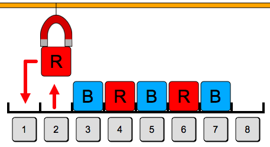
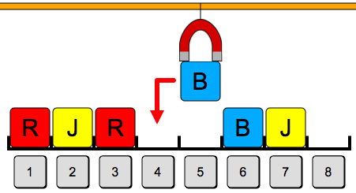
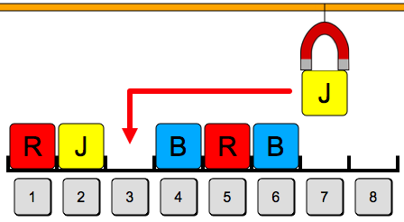

Piloting the Crane
Pilot the magnet crane by clicking on the grey numbered buttons, to move the blocks to be the Target image.
The fewer steps you make, the more points you get.
|
Target: |
Pilot the magnet crane by clicking on the grey numbered buttons, to move the blocks to be the Target image.
The fewer steps you make, the more points you get.
|
Target: |


Une solution consiste à commencer par libérer une place, puis à décaler chacun des autres blocs pour les ranger à leur place, et enfin placer le premier bloc manipulé à sa place.
| Etape 1 : libérer une place temporaire en déplaçant le bloc rouge. | Etape 2 : décaler les autres blocs vers la gauche. | Etape 3 : ranger le premier bloc déplacé à sa place. |
|  |  |
 |
Cette approche correspond à la séquence 2 1, 3 2, 4 3, 5 4, 6 5, 7 6, 1 7. D'autres séquences étaient possibles.
Une solution consiste à commencer par libérer une place, puis on répète le principe suivant : à chaque étape, on déplace un bloc de la bonne couleur vers la place libre. On évite le plus possible de déplacer des blocs qui sont déjà à leur place finale. On évite également de déplacer le premier bloc qui a servi à libérer la première place, sauf tout à la fin.
En procédant ainsi, chaque bloc est déplacé exactement une fois, sauf le premier qui est déplacé deux fois. Il n'est pas possible de faire moins de déplacements.
| Etape 1 | Etape 2 (1) | Etape 2 (2) |
 |
 |
 |
| Etape 2 (3) | Etape 2 (4) | Etape 2 (5) |
 |
 |  |
| Etape 3 | Résultat | |
 |
 |
Cette approche correspond à la séquence 2 1, 4 2, 5 4, 3 5, 7 3, 6 7, 1 6. D'autres séquences étaient possibles.
Lorsqu'on enregistre un fichier sur le disque dur, il n'est pas toujours possible d'écrire l'ensemble de ce fichier à un seul endroit du disque. Il faut alors écrire des morceaux du fichier à plusieurs endroits.
Par ailleurs, lorsqu'on ajoute des données à un fichier existant, il se peut qu'il y ait déjà un fichier qui se trouve juste après sur le disque dur. Dans ce, il n'est pas efficace de déplacer les fichiers, qui peuvent être très gros, alors qu'il suffit d'écrire les données à ajouter ailleurs sur le disque dur.Dans les deux cas, on se retrouve avec des morceaux d'un même fichier répartis à plusieurs endroits sur le disque dur. Ce phénomène s'appelle la fragmentation. Lorsque la fragmentation est trop importante, cela nuit aux performances du système, car pour lire un fichier en entier, il faut sauter d'un endroit à l'autre du disque, et cela prend du temps.
Il peut être nécessaire de défragmenter le disque dur. Cette opération consiste à remettre les morceaux d'un même fichier à côté les uns des autres. Pour réaliser cette opération efficacement, il faut déplacer des morceaux de fichiers de manière astucieuse, afin de minimiser le nombre de déplacement, un peu comme on le fait dans ce sujet.
-->